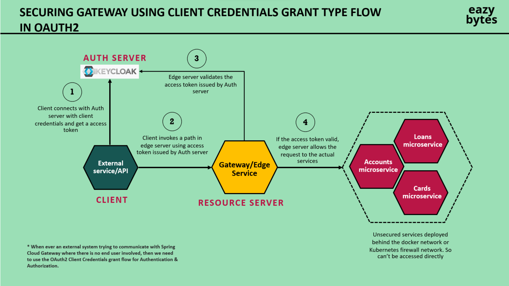

Keycloak as Resource Server in Spring Boot Application
1. Keycloak Setup
Realm:
- Create a realm in Keycloak for your application (e.g.,
myapp-realm).
Client:
- Add a new client in the Keycloak realm (e.g.,
spring-boot-client). - Configure the client to use public client access.
- Set the Valid Redirect URI to the correct URL of your Spring Boot app (e.g.,
http://localhost:8080/*).
Roles:
- Create roles like
ACCOUNTS,CARDS, andLOANSin the Keycloak realm. - Assign these roles to users based on their permissions.
2. Spring Boot Security Configuration (Resource Server)
In this part, Spring Security is configured to act as a resource server that validates JWT tokens issued by Keycloak.
2.1 Dependencies:
Add the following dependencies to your pom.xml to integrate Spring Security and Keycloak:
<dependency>
<groupId>org.keycloak</groupId>
<artifactId>keycloak-spring-boot-starter</artifactId>
<version>YOUR_KEYCLOAK_VERSION</version>
</dependency>
<dependency>
<groupId>org.springframework.boot</groupId>
<artifactId>spring-boot-starter-oauth2-resource-server</artifactId>
</dependency>
2.2 Application Properties Configuration:
In application.properties (or application.yml), configure Keycloak settings:
keycloak.realm=myapp-realm
keycloak.auth-server-url=http://localhost:8080/realms/myapp-realm
keycloak.public-client=true
keycloak.resource=spring-boot-client
keycloak.credentials.secret=YOUR_SECRET
spring.security.oauth2.resourceserver.jwt.issuer-uri=http://localhost:8080/realms/myapp-realm
3. Security Configuration Class
Create a SecurityConfig class to define resource server settings and JWT validation.
3.1 SecurityConfig Class:
** Before Spring 5 **
@Configuration
@EnableWebSecurity
public class SecurityConfig extends WebSecurityConfigurerAdapter {
@Override
protected void configure(HttpSecurity http) throws Exception {
http
.oauth2ResourceServer()
.jwt()
.and()
.authorizeRequests()
.antMatchers("/accounts/**").hasRole("ACCOUNTS")
.antMatchers("/cards/**").hasRole("CARDS")
.antMatchers("/loans/**").hasRole("LOANS")
.anyRequest().authenticated();
}
}
** Before Spring 5 **
@Configuration
@EnableWebSecurity
public class SecurityConfig {
@Bean
public SecurityFilterChain securityFilterChain(HttpSecurity http) throws Exception {
http
.oauth2ResourceServer()
.jwt()
.and()
.authorizeRequests()
.antMatchers("/accounts/**").hasRole("ACCOUNTS")
.antMatchers("/cards/**").hasRole("CARDS")
.antMatchers("/loans/**").hasRole("LOANS")
.anyRequest().authenticated();
return http.build();
}
}
Role-Based Access Control:
Here, we restrict access to certain URLs based on the roles (ACCOUNTS, CARDS, LOANS) defined in Keycloak.
JWT Converter:
JwtAuthenticationConverter is used to extract roles from the JWT token and map them to Spring Security's authorities.
4. JWT Token Validation
Spring Security validates the JWT token by using Keycloak’s public key endpoint, typically at:
http://localhost:8080/realms/myapp-realm/protocol/openid-connect/certs
This URL exposes Keycloak's public keys used for validating the JWT signatures.
5. Role Mapping (Keycloak Role Converter)
You need to map the roles from Keycloak's JWT into Spring Security roles. You can do this with a custom Converter
5.1 KeycloakRoleConverter:
public class KeycloakRoleConverter implements Converter<Jwt, AbstractAuthenticationToken> {
@Override
public AbstractAuthenticationToken convert(Jwt jwt) {
List<GrantedAuthority> authorities = extractRoles(jwt);
return new JwtAuthenticationToken(jwt, authorities);
}
private List<GrantedAuthority> extractRoles(Jwt jwt) {
Collection<String> roles = (Collection<String>) jwt.getClaims().get("realm_access").get("roles");
return roles.stream()
.map(role -> new SimpleGrantedAuthority("ROLE_" + role))
.collect(Collectors.toList());
}
}
This class maps Keycloak roles from the realm_access claim in the JWT to Spring Security's granted authorities (prefix ROLE_ added).
6. Disabling CSRF Protection
Since this is a stateless application using JWT, CSRF protection is not needed and can be disabled:
http.csrf().disable();
7. Security Flow
Client Authentication:
A client authenticates with Keycloak and obtains a JWT token.
JWT Token Transmission:
The client includes the JWT token in the Authorization header (Bearer
JWT Validation:
Spring Boot's SecurityConfig class validates the token using the public keys from Keycloak.
Role-based Authorization:
Based on the roles embedded in the JWT (via realm_access claim), the resource server enforces access control to various APIs.
8. Token Expiry and Refresh
Keycloak issues short-lived JWT tokens, and the client may need to refresh the token when expired. This can be done using a refresh token, which is also handled by Keycloak.
